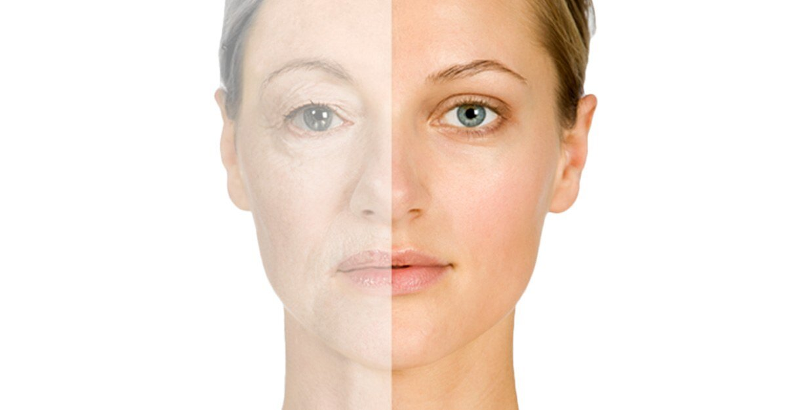
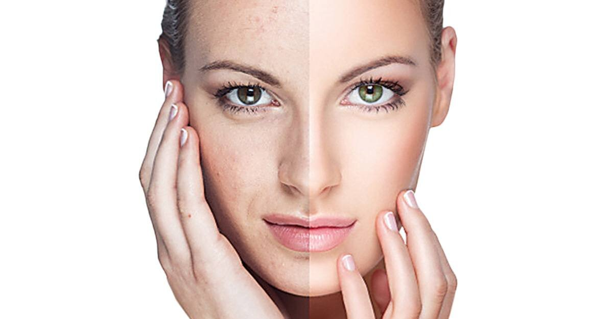
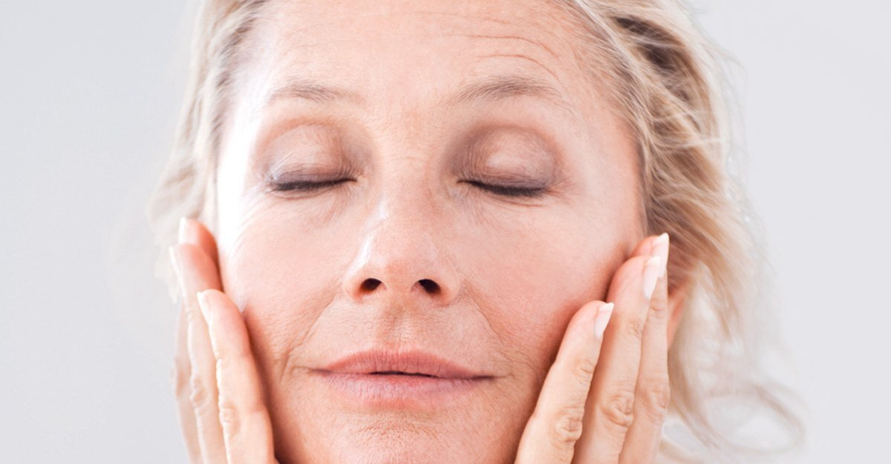
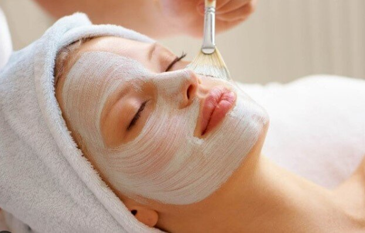

❀ Luce un hermoso rostro sin impurezas ❀
¿Para qué un facial?
La limpieza facial es un tratamiento indispensable para mantener la higiene de la piel del rostro y recuperar su vitalidad, frescura y luminosidad. Lo realiza un profesional de la estética, quien evaluará tu tipo de piel, y recomendará los productos adecuados para su mantenimiento en casa dependiendo de las necesidades cutáneas de cada paciente.
Beneficios de la limpieza facial profunda
Los beneficios de realizarse regularmente una limpieza facial profunda por un profesional son:
- Suaviza la piel.
- Regula el pH de la piel.
- Elimina acné y puntos negros.
- Regula la producción de grasa.
- Aumenta la luminosidad del rostro.
- Recupera las funciones vitales de la piel.
- Elimina y remueve las impurezas y células muertas.
✧ Ven y prueba con nosotros los diferentes tipos de faciales que te ofrecemos ✧
☼ Antiaging o rejuvenecedor facial ☼
El tratamiento antiaging o rejuvenecedor facial se aplica según el grado de envejecimiento y actúa de manera eficaz contra los signos de envejecimiento facial (envejecimiento biológico, cronológico o fotoenvejecimiento). Gracias a una efectiva combinación de tratamientos conseguimos actuar sobre las esteticopatías que presenta la piel en las diferentes capas del tejido.

☼ Eliminación de manchas en la piel ☼
Tratamientos diseñados para la eliminación y/o atenuación de manchas en la piel de origen melánico. Mediante un diagnóstico se valora el tratamiento más adecuado para tratar las manchas faciales según su estado y origen: manchas epidérmicas, dérmicas y mixtas.

☼ Reafirmante facial ☼
Por su acción reparadora y reestructurante, el tratamiento reafirmante es un tratamiento antienvejecimiento evolutivo no quirúrgico. Permite tonificar los músculos y el tejido conjuntivo.

☺ Clientas satisfechas ☺


Citas disponibles vía Whatsapp